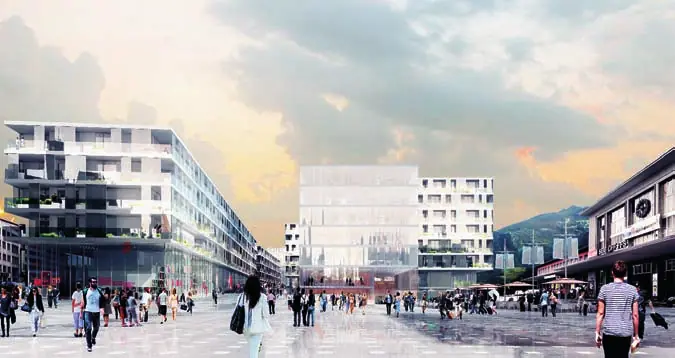
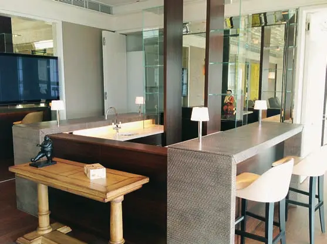
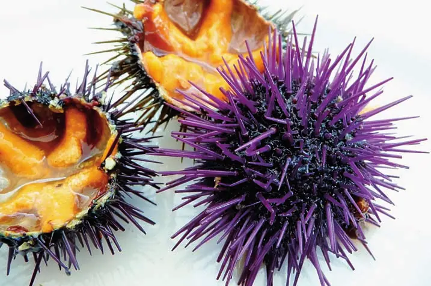
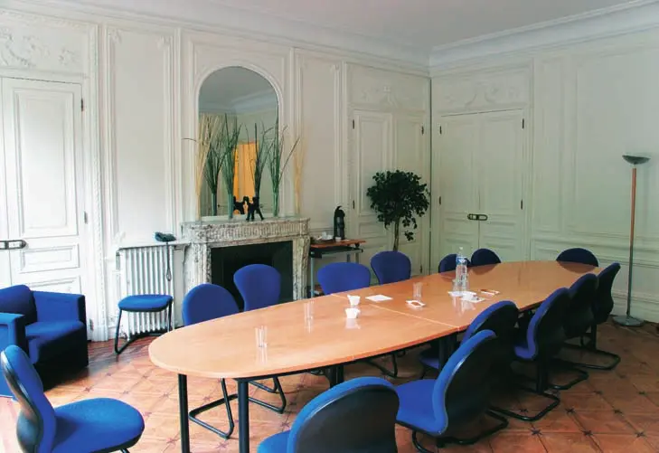
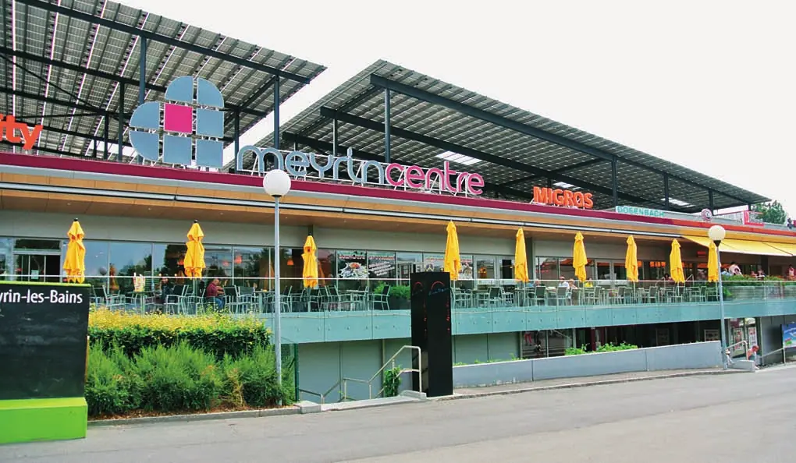
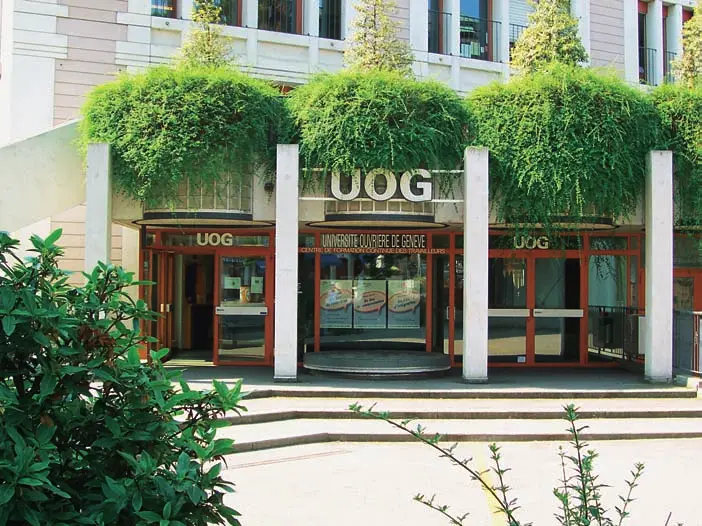

Économie régionale · 2015 · Genève et La Côte vaudoise
Swiss Knowhow – Genève et La Côte (janvier 2015)
Numéro de janvier 2015 consacré au bassin genevois et à La Côte vaudoise. Il réunit les interviews d'élus de Genève, Meyrin, Carouge, Lancy et Plan-les-Ouates, puis de Nyon, Morges, Gland, Aubonne et Cossonay, ainsi que des organismes régionaux ARCAM et Régionyon. Une série de publireportages présente des PME genevoises de la construction, de l'ingénierie, des services et de l'immobilier. Le numéro s'ouvre sur un entretien en allemand avec le syndic de Soleure.
Sommaire · 60 articles
 Interview
InterviewStadt Solothurn – « Solothurn schaut auf eine äusserst erfreuliche Dekade zurück »
Interview mit Nationalrat Kurt Fluri, Stadtpräsident von Solothurn und Präsident des Schweizerischen Städteverbands
 Interview
InterviewCanton de Genève – Corriger le mal-développement de Genève
Interview d'Antonio Hodgers, conseiller d'Etat chargé du DALE
 Interview
InterviewMeyrin – Développer en restant maîtres
Interview de M. Jean-Marc Devaud, conseiller administratif et maire de la Ville de Meyrin
 Interview
InterviewCarouge – Une qualité de vie à préserver
Interview de Nicolas Walder, conseiller administratif de la Ville de Carouge
 Interview
InterviewPlan-les-Ouates – Commune aux mille visages
Interview de Mme Fabienne Monbaron, conseillère administrative de la ville de Plan-les-Ouates
 Interview
InterviewLancy – Partenaire du développement du canton
Interview de M. François Lance, conseiller administratif de la Ville de Lancy
InterviewLes Vergers, 1er quartier Minergie A de Suisse
Interview de Philippe Maag, chef de projet Vergers à la Ville de Meyrin
DossierMeyrin au centre du dynamisme économique régional
Stratégie économique, grand projet ZIMEYSAVER et Meyrin Economic Forum
 Publireportage
PublireportageAmstein+Walthert Genève SA – Ingénieurs-conseils en technique du bâtiment et consulting

Answer SA
Solutions de consolidation de données financières et cybersécurité
 Publireportage
PublireportageCarouge – Vieillir dans les meilleures conditions
Résidence Carouge-Centre et Résidence Les Pervenches
 Publireportage
PublireportageArchi SA dialogue avec l'extérieur
 Publireportage
PublireportageBM Entreprise du bâtiment SA – Expériences et savoir-faire
 Publireportage
PublireportageASDZ Architecture – Carouge Est
Image directrice pour l'îlot du Clos de la Fonderie Sud
 Publireportage
PublireportageAtelier Nord – Aux antipodes d'un schéma à l'infini

PublireportageLe Comptoir Immobilier à la pointe des prestations

PublireportageDSSA : études et conception de projets électriques

PublireportageGastromer – La passion des produits de la mer

PublireportageGuy A. Bottequin : « La médiation de conflits, un antidote au taylorisme judiciaire »

Hestia Constructions, une entreprise globale

Partn-Air SA – Spécialistes en ventilation
 Publireportage
PublireportageHydrosystem SA – Pros de l'hydraulique et pneumatique

PublireportageLa magie de l'âme de MeyrinCentre
« Au cœur de vos envies »
 Publireportage
PublireportageMPM facility services SA – Le sérieux qui fait la différence
 Publireportage
PublireportageScholl-Metal SA – Les pros du métal
 Publireportage
PublireportageSGI Ingénierie SA – L'ingénierie en mouvement
 Publireportage
PublireportageS+M Architectes SA – Transcender le nécessaire : maîtrise et solutions innovantes

PublireportageL'Université Ouvrière de Genève (UOG)
 Interview
InterviewDistrict de Nyon, entre ceps et sapins
Le regard aiguisé du préfet Jean-Pierre Deriaz
 Interview
InterviewL'ARCAM, un outil de développement régional
Entretien avec son président Georges Rime
 Interview
InterviewCossonay, le charme discret du Pied du Jura vaudois
Le syndic veut un développement raisonnable et maîtrisé
DossierComment l'ARCAM prend l'avenir en mains – Des objectifs et des projets
Entretien avec M. Oscar Cherbuin, directeur de l'ARCAM

Nyon – Une ville qui a trouvé sa place
Entretien avec M. Daniel Rossellat, syndic
 Interview
InterviewMorges est une ville heureuse
Interview de Vincent Jaques, syndic de Morges
 Interview
InterviewL'Ensemble Hospitalier de la Côte – Les soins à la portée de tous
Entretien avec le directeur général de l'EHC, M. François Jacot-Descombes
Conseil régional de Nyon – Pour une vie propre entre Genève et Lausanne
Interview de Gérald Cretegny, président du comité de direction de Régionyon
 Interview
InterviewGland, un village devenu ville
Interview du syndic Gérald Cretegny
 Interview
InterviewAubonne, une commune à deux pôles
Interview du syndic Luc-Etienne Rossier
InterviewMorges – Introduire la nature en ville
Interview de Jean-Jacques Aubert, municipal en charge des infrastructures, des énergies et des espaces publics
InterviewAubonne – Développer notre offre de tourisme vert
Interview de Gisèle Burnet, municipale (instruction publique, affaires sociales, petite enfance, culture et tourisme)
Nyon – Maîtriser le développement urbanistique de la Ville
Entretien avec Mme Fabienne Freymond Cantone, municipale en charge de l'urbanisme et des ressources humaines
InterviewGland – Préparer l'arrivée de nouveaux habitants
Interview de Thierry Genoud, municipal en charge des bâtiments et de l'urbanisme
Nyon – Equipements : un retard à rattraper
Entretien avec M. Claude Uldry, conseiller municipal en charge des bâtiments, des finances, de l'informatique et de la population
Nyon – Trois piliers pour soutenir la Culture
Entretien avec Olivier Mayor, conseiller municipal en charge de la culture, des travaux et de l'environnement
InterviewAubonne – Favoriser les démarches proactives
Interview de Jean-Christophe de Mestral, municipal (finances, mobilité, transports publics, sécurité)
InterviewCossonay – Un nouveau réseau de communes pour une abondance d'eau potable
Interview de Claude Moinat, municipal (eaux et épuration, services industriels, routes, finances)
InterviewAubonne – Aider les jeunes à prendre leur place dans la société
Interview d'Eric Muller, municipal (domaines, parcs, voirie, déchets, jeunesse, service du feu)
InterviewMorges – Priorité à la densification et la qualité urbaine
Interview d'Yves Paccaud, municipal en charge de l'aménagement du territoire et du développement durable
InterviewGland – Priorité à l'ordre public et à la sécurité des personnes
Interview de Michael Rohrer, municipal (sécurité publique, population, transports publics)
Nyon – Préparer la mobilité de demain
Entretien avec Mme Elisabeth Ruey-Ray, conseillère municipale en charge de la mobilité, des transports et de la sécurité publique
InterviewMorges – Pour une fiscalité des entreprises stable
Interview d'Eric Züger, municipal en charge des finances et de la promotion économique
InterviewCossonay – Un grand dynamisme social et culturel
Interview de Nicole Baudet, vice-présidente de la Municipalité (bâtiments, constructions, affaires sociales, santé, culture)
InterviewGland – Une région dynamique et attractive pour les entreprises
Interview de Daniel Collaud, municipal (finances, promotion économique, sports, santé, domaines et forêts)
Nyon – Des espaces verts, gages de qualité de vie
Entretien avec M. Claude Dupertuis, conseiller municipal en charge des espaces verts, forêts et services industriels
InterviewCossonay – Un emplacement géographique très favorable
Interview de Bernard Ebener, municipal (parcs, environnement et développement durable, informatique, sport, forêts, défense incendie)
InterviewRéaménager le Vieux-Bourg de Gland
Interview d'Olivier Fargeon, municipal en charge des équipements, espaces verts et gestion des déchets
InterviewGland – Offrir aux jeunes des lieux de rencontre
Interview de Christine Girod, municipale en charge de l'accueil de l'enfance, de la jeunesse et des écoles
InterviewCossonay – Un centre entièrement dédié à l'enfance
Interview de Valérie Induni, municipale (protection civile, cultes, écoles et petite enfance)
InterviewGland – Priorité au logement accessible de qualité
Interview d'Isabelle Monney, municipale en charge des affaires sociales, du logement, de la culture et des cultes
 Publireportage
PublireportageAcronet Sàrl – Les pros sur cordes
Entreprises de ce numéro · 37
Acronet Sàrl
Travaux acrobatiques sur cordes
Amstein+Walthert Genève SA
Ingénierie technique du bâtiment et consulting
Answer SA
Logiciels financiers et cybersécurité
ARCAM – Association de la région Cossonay-Aubonne-Morges
Association de développement régional
Archi SA
Bureau d'architectes
ASDZ Architecture SA
Bureau d'architectes et urbanisme
Atelier Nord Sàrl
Bureau d'architectes
BM Entreprise du bâtiment SA
Rénovation, gypserie-peinture
Commune de Cossonay
Commune
Commune de Plan-les-Ouates
Commune
Comptoir Immobilier SA
Régie immobilière et développement de projets
Département de l'aménagement, du logement et de l'énergie (DALE) – Canton de Genève
Administration cantonale
DSSA Dumont-Schneider SA
Bureau d'ingénieurs en électricité
Ensemble Hospitalier de la Côte (EHC)
Hôpitaux et EMS
Gastromer
Grossiste en produits de la mer
Genevaccord Alternative Dispute Resolution (A.D.R.) SA
Médiation de conflits
Hestia Constructions SA
Entreprise générale
Hydrosystem SA
Hydraulique et pneumatique
MeyrinCentre
Centre commercial
MPM facility services SA
Nettoyage et facility services
Partn-Air SA
Ventilation
Préfecture de Nyon
Administration cantonale
Régionyon – Conseil régional du district de Nyon
Association de développement régional
Résidence Carouge-Centre
Logements encadrés pour personnes âgées
Résidence Les Pervenches
EMS
S+M Architectes SA
Bureau d'architectes
Scholl-Metal SA
Construction métallique et tôlerie
SGI Ingénierie SA
Bureau d'ingénieurs civils

Stadt Solothurn – Stadtpräsidium
Administration communale
Université Ouvrière de Genève (UOG)
Formation pour adultes
Ville d'Aubonne
Commune
Ville de Carouge
Commune
Ville de Gland
Commune
Ville de Lancy
Commune
Ville de Meyrin
Commune
Ville de Morges
Commune
Ville de Nyon
Commune
Aucun résultat.